| 공칭전압 | 최대사용전압 | 시험 전압 |
|---|---|---|
| 6,600 [V] | 6,900 [V] | ① |
| 13,200 [V] (중성점 다중 접지식 선로) | 13,800 [V] | ② |
| 22,900 [V] (중성점 다중 접지식 선로) | 24,000 [V] | ③ |
정답
①
②
③
(단순 계산형 / 난이도 下)
① 6,900 \(\times\) 1.5 = 10,350 [V]
② 13,800 \(\times\) 0.92 = 12,696 [V]
③ 24,000 \(\times\) 0.92 = 22,080 [V]
| 점수 | 세부기준 |
|---|---|
| 5점 | ①, ②, ③번을 모두 맞은 경우 5점 획득 |
| 3점 | ①, ②, ③번 중 2개만 맞은 경우 3점 획득 |
| 1점 | ①, ②, ③번 중 1개만 맞은 경우 1점 획득 |
[한국전기설비규정 132] 전로의 절연저항 및 절연내력
| 접지방식 | 최대 사용전압 | 시험 전압 배수 | 최저 시험전압 |
|---|---|---|---|
| 비접지 | 7[kV] 이하 | 1.5배 | |
| 7[kV] 초과 60[kV] 이하 |
1.25배 | 10,500 [V] | |
| 중성점 접지 | 60[kV] 초과 | 1.25배 | |
| 비접지 | 60[kV] 초과 | 1.1배 | 75,000 [V] |
| 중성점 접지 | 60[kV] 초과 170[kV] 이하 |
0.72배 | |
| 직접접지 | 170[kV] 초과 | 0.64배 | |
| 중성점 접지 | 7[kV] 초과 25[kV] 이하 |
0.92배 |
가. 구리 도체 (①)[mm²]
나. 알루미늄 도체 (②)[mm²]
다. 강철 도체 (③)[mm²]
정답
①: 6
②: 16
③: 50
④: 25
| 점수 | 세부기준 |
|---|---|
| 4점~0점 | 정답 1개당 부분점수 1점씩 획득 |
[한국전기설비규정 143.3.1] 보호 등전위본딩 도체
주접지 단자에 접속하기 위한 등전위본딩 도체는 설비 내에 있는 가장 큰 보호접지 도체 단면적의 $ $이상의 단면적을 가져야 하고 다음의 단면적 이상이어야 한다.
주접지 단자에 접속하기 위한 보호본딩 도체의 단면적은 구리도체 25[mm²] 또는 다른 재질의 동등한 단면적을 초과할 필요는 없다.
정답
명칭: 자동부하 전환개폐기
사용용도: 이중전원을 확보하여 주전원이 정전되거나 기준치 이하로 전압이 떨어질 경우 예비전원으로 자동으로 전환시켜 수용가에 안정된 전원을 공급하도록 하는 개폐기이다.
| 점수 | 세부기준 |
|---|---|
| 4점~0점 | 명칭과 사용용도 총 2개 중 정답 1개당 부분 점수 2점씩 획득 |
ATS(자동 전환개폐기)
ALTS(자동부하 전환개폐기)
[보기]
정답
정답
| 점수 | 세부기준 |
|---|---|
| 6점 | 소문항 (1), (2) 총 2문제 모두 맞은 경우 6점 획득 |
| 3점 | 소문항 (1), (2) 총 2문제 중 1개만 맞은 경우 3점 획득 |
[KS C IEC 62305-3] 피뢰시스템
4.1 피뢰시스템의 등급
피뢰시스템의 각 등급은 다음과 같은 특징을 가진다.
[동작사항]
[범례]
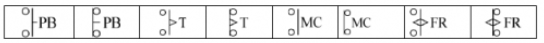
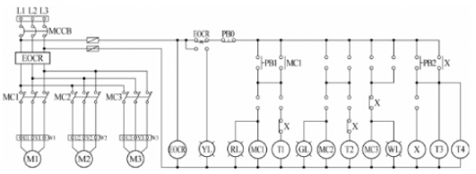
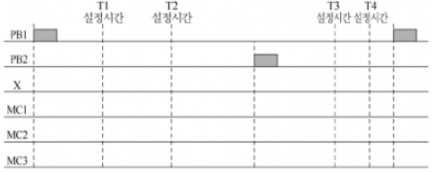
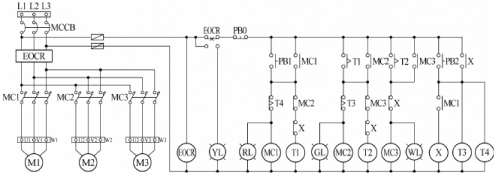
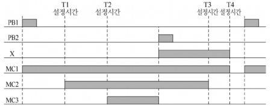
| 점수 | 세부기준 |
|---|---|
| 8점 | (1), (2)번을 모두 정확하게 작성한 경우 8점 획득 |
| 4~0점 | (1) 문항의 경우 동작, 오작 둘의 경우만 있으므로 모두 정답일 경우에만 4점 획득 |
| 4~0점 | (2) 문항의 소자별 타임차트 총 4개 중 정답 1개당 부분 점수 1점 획득 |
이러한 문제의 문항 (1)은 시퀀스 회로도의 동작사항을 순차적으로 따라가면서 필요한 접점이 무엇인지를 찾으면 되고, (2)는 릴레이 X와 모터의 스위치 역할을 하는 MC1~MC3의 전원이 언제 들어가게 되는지를 확인하면서 타임차트를 작성하면 된다. 여기서는 타이머에 의한 순차 회로임을 파악하면 쉽게 문제를 해결할 수 있다.
승압된 전압은 몇 [V]인지 계산하시오.
아래 3상 V결선 승압기의 결선도를 직접 완성하시오.
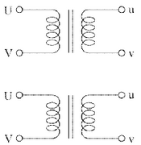
해설) 복합 계산형 / 난이도 上
[계산과정]
승압된 전압 = $6,300 × (1 + ) $= 6,500.454 [V]
정답 6,500.45[V]
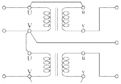
| 점수 | 세부기준 |
|---|---|
| 6점 | (1), (2)번이 모두 정답인 경우 6점 획득 |
| 3점 | 문항 (1)의 계산과정과 답안이 모두 맞으면 3점, 오류가 있으면 0점 |
| 3점 | 문항 (2)의 결선도가 모두 맞으면 3점, 오류가 있으면 0점 |
접근 POINT
단권 변압기는 강압용과 승압용으로 사용하는데, 주로 승압용이 출제된다. 또한, 배전선로의 유도전압 조정기의 원리로도 단권변압기가 이용되므로 결선법, 자기용량과 부하용량 관계, 승압된 전압 공식을 잘 숙지해야 한다.
권수비가 a인 단상 변압기를 단권 변압기로 결선하여 승압기로 사용할 경우 승압된 전압
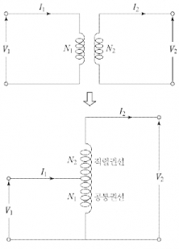
2권선 단권변압기의 권수비 $a = $
단권 변압기의 전압비 $a’ = = $
승압된전압 \(V_2 = V_1(1 + \frac{1}{a})\) 가 된다.
문제 (1)의 V결선된 승압기 회로도
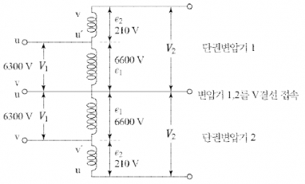
[계산과정]
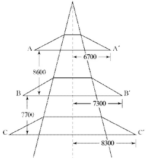
정답
[계산과정]
정답
해설: 단순 계산형 / 난이도 중
[계산과정]
\[ D\_{AB} = \sqrt{8.6^2 + (7.3 - 6.7)^2} = 8.620 \text{ [m]} \]
\[ D\_{BC} = \sqrt{7.7^2 + (8.3 - 7.3)^2} = 7.764 \text{ [m]} \]
\[ D\_{CA} = \sqrt{(8.6 + 7.7)^2 + (8.3 - 6.7)^2} = 16.378 \text{ [m]} \]
\[ D = \sqrt[3]{8.62 \times 7.76 \times 16.38} = 10.309 \text{ [m]} \]
정답 10.31 [m]
[계산과정]
\[ D_0 = \sqrt[3]{2 \times 0.5} = 0.561 \text{ [m]} \]
정답 0.56 [m]
부분 점수
| 점수 | 세부 기준 |
|---|---|
| 5점 | (1), (2)번이 모두 맞은 경우 5점 획득 |
| 3점 | (1)번이 계산과정까지 맞은 경우 3점 획득 |
| 2점 | (2)번이 계산과정까지 맞은 경우 2점 획득 |
접근 POINT
등가 선간거리(기하학적 평균 거리)의 정의식을 알고, 각 도체의 배열에 따라 알맞은 식을 적용한다.
해설
\[ 등가 선간거리(D_0): 기하학적 평균 거리 \]
\[ D_0 = \sqrt[n]{D_1 \times D_2 \times D_3 \dots \times D_n} \text{ [m]} \]
도체 배열에 따른 등가 선간거리
① 직선 배열: $D_0 = $
② 정삼각형 배열: $D_0 = D $
③ 정사각형 배열:$ D_0 = $
[계산과정]
먼저, 전력계의 회전속도를 계산합니다.
\[ 회전속도 = \frac{20 \text{회}}{40.3 \text{초}} \approx 0.496 \text{회/초} \]
다음으로, 1시간 동안의 회전수를 계산합니다.
\[ 1시간 동안의 회전수 = 0.496 \text{회/초} \times 3600 \text{초/시간} = 1786.1 \text{회/시간} \]
계기정수는 1,000 [Rev/kWh]이므로, 1시간 동안 소비된 에너지를 계산합니다.
\[ 소비 에너지 = \frac{1786.1 \text{회}}{1000 \text{회/kWh}} = 1.7861 \text{kWh} \]
전력은 에너지를 시간으로 나눈 값이므로, 부하전력을 계산합니다.
\[ 부하전력 = 1.7861 \text{kWh} \div 1 \text{시간} = 1.7861 \text{kW} \]
오차율 2%를 고려하여 최종 부하전력을 계산합니다.
\[ 최종 부하전력 = 1.7861 \text{kW} \times (1 + 0.02) = 1.819 \text{kW} \]
따라서, 부하전력은 약 1.82 kW 입니다.
정답 1.82 kW
해설) 복합 계산형 / 난이도 중
[계산과정]
① 적산 전력계의 측정값
\[ P_M = \frac{3600 \times 20}{40.3 \times 1000} = 1.79 \text{ [kW]} \]
② 오차, 부하 전력
\[ 오차율 \epsilon = \frac{P_M - P_T}{P_T} \times 100[\%] = 2[\%] 이다. \]
\[ P_M = 102[\%] P_T \rightarrow P_T = \frac{1.79}{1.02} \approx 1.75 \text{ [kW]} \]
정답 1.75 [kW]
부분점수
| 점수 | 세부기준 |
|---|---|
| 5점 | 계산과정과 답이 모두 맞은 경우 5점 획득 |
| 0점 | 계산과정과 답 중 오류가 있으면 0점 |
해설
[적산전력계의 측정값 구하기]
\[ P = \frac{3600 \times n}{t \times k} \times CT비 \times PT비 \text{ [kW]} \]
n: 회전수[회], t: 시간[sec], k: 계기 정수 [rev/kWh]
[오차와 오차율]
\[ 오차: e = M - T, 오차율: \epsilon = \frac{M - T}{T} \times 100[\%] (여기서, M: 측정값, T: 참값) \]
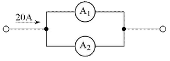
[계산과정]
정답
[계산과정]
① 각 전류계의 내부저항(옴의 법칙)
\[ r_1 = \frac{75 \times 10^{-3}}{15} = 5 \, [m\Omega], r_2 = \frac{50 \times 10^{-3}}{15} = \frac{10}{3} \, [m\Omega] \]
② 전류분배 법칙
\[ I_1 = \frac{r_2}{r_1 + r_2} \times I = \frac{\frac{10}{3}}{5 + \frac{10}{3}} \times 20 = 8 \, [A], I_2 = I - I_1 = 20 - 8 = 12 \, [A] \]
정답 전류계 A₁: 8[A], 전류계 A₂: 12[A]
| 점수 | 세부기준 |
|---|---|
| 5점 | 계산과정과 답이 모두 맞은 경우 5점 획득 |
| 0점 | 계산과정과 답 중 오류가 있으면 0점 |
전류 분배 법칙을 이용하여 각 전류계에 흐르는 전류를 구한다.
\[ i(t) = 10\sin(\omega t) + 4\sin(2\omega t + 30^\circ) + 3\sin(3\omega t + 60^\circ) \text{ [A]} \]
[계산과정]
정답
[계산과정]
\[ I = \sqrt{I_1^2 + I_2^2 + I_3^2} = \sqrt{\left(\frac{10}{\sqrt{2}}\right)^2 + \left(\frac{4}{\sqrt{2}}\right)^2 + \left(\frac{3}{\sqrt{2}}\right)^2} \approx 7.91 \text{[A]} \]
정답 7.91 [A]
| 점수 | 세부기준 |
|---|---|
| 4점 | 계산과정과 답이 모두 맞은 경우 4점 획득 |
| 0점 | 계산과정과 답 중 오류가 있으면 0점 |
\[ 비정현파의 실효값 I = \sqrt{\text{각 고조파 실효값 제곱의 합}} \]
\[ I = \sqrt{I*0^2 + I_1^2 + I_2^2 + I_3^2} = \sqrt{I_0^2 + \left(\frac{I*{1,m}}{\sqrt{2}}\right)^2 + \left(\frac{I*{2,m}}{\sqrt{2}}\right)^2 + \left(\frac{I*{3,m}}{\sqrt{2}}\right)^2} \]
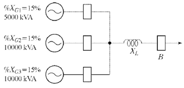
%XG1 = 15% (5000 kVA)
%XG2 = 15% (10000 kVA)
%XG3 = 15% (10000 kVA)
[계산과정]
정답
해설) 복합 계산형 / 난이도 上
정답
[계산과정]
10 [MVA] 기준으로 환산한 리액턴스를 구한다.
$ %X_G = 15 = 30$ [%]
$ %X_{G2} = 15 = 15$ [%]
$ %X_{G3} = 15 = 15$ [%]
세 발전기는 병렬연결이다.
합성 리액턴스 = \(\frac{1}{\frac{1}{30} + \frac{1}{15} + \frac{1}{15}} = 6\) [%]
차단기의 단락용량 $P_s = [MVA] = 100 [MVA] $
$ X_L = 4$ [%]
정답 4[%]
부분점수
| 점수 | 세부기준 |
|---|---|
| 5점 | 계산과정과 답이 모두 정답이면 5점 획득 |
| 0점 | 계산과정 또는 답에 오류가 있으면 0점 |
접근 POINT
단락전류를 경감하는 방법은 한류리액터 사용, 고임피던스 기기 채용, 계통전압 격상, 계통 분할의 방법 등이 있는데, 그 중 한류리액터를 선로에 삽입하는 방법은 계통의 리액턴스를 증가시켜 단락전류를 경감하는 원리를 적용한 것이다.
해설
[리액턴스의 용량 계산 절차]
① 단락용량 $P_s = P_n $
② 기준용량(\(P_n\))에 대한 퍼센트 임피던스(%Z)의 환산법
\(\%Z = \frac{P_s Z}{10^6 V^2}\) 에서 \(\%Z \propto P_n\) 이다.
③ 차단기의 차단용량은 차단기에서 전원 측을 바라본 합성 리액턴스를 적용한다.
④ 한류리액터를 이용한 단락전류 경감 원리: 차단기와 전원측 사이에 직렬로 리액턴스를 삽입한다.
[계산과정]
정답
정답
[계산과정]
\[ 전압강하 e = \frac{P}{V_r}(R + X \tan\theta) \rightarrow P = \frac{eV_r}{R + X \tan\theta} \]
\[ 부하전력 P = \frac{300 \times 3,000}{2 + 1.8 \times \frac{0.6}{0.8}} = 268.66 \text{ [kW]} \]
정답 268.66 [kW]
부분점수
| 점수 | 세부기준 |
|---|---|
| 5점 | 계산과정과 답이 모두 맞은 경우 5점 획득 |
| 0점 | 계산과정과 답 중 오류가 있으면 0점 |
해설
\[ 전압강하 계산식 e = V_s - V_r = \frac{\sqrt{3}I(R\cos\theta + X\sin\theta)}{V_r} = \frac{P(R + X\tan\theta)}{V_r} \]
[계산과정]
정답
해설) 단순 계산형 / 난이도 중
[계산과정]
총 유효전력 P = 형광등 유효전력 + 백열등 유효전력 \[ = 60 × 50 + 100 × 60 = 9,000 [W] \]
총 무효전력 Q = 형광등 무효전력 \[ = 60 \times \tan\theta \times 50 = 60 \times \frac{\sqrt{1 - 0.9^2}}{0.9} \times 50 = 1,452.966 [Var] \]
백열등(저항 성분만 존재하여 유효전력만 존재)의 무효전력 = 0
\[ \* 전체 피상전력 P_a = \sqrt{9,000^2 + 1,452.966^2} = 9,116.529 [VA] \]
\[ \* 분기회로 수 = \frac{9,116.529 \text{ [VA]}}{220 \text{ [V]} \times 16 \text{ [A]}} = 2.589 \]
정답 분기회로 3회로
부분점수
| 점수 | 세부기준 |
|---|---|
| 5점 | 계산과정과 답이 모두 맞으면 5점 획득 |
| 0점 | 계산과정과 답 중 오류가 있는 경우 |
접근 POINT
총 부하용량은 피상전력 [VA]을 의미하고 각 부하의 유효전력과 무효전력을 구하여 벡터합으로 계산한다.
해설
백열등의 역률이 문제에 주어지지 않는 경우 역률은 1로 계산한다.
(∴ 순수 저항 부하로 간주)
따라서 “전체 무효전력 = 형광등의 무효전력”이 된다.
무효전력 Q = 유효전력 P × tanθ
\[ 분기회로 수 = \frac{\text{총 부하용량 [VA]}}{\text{전압 [V]} \times \text{전류 [A]}} \]
분기회로의 수는 계산값에서 올림한다.
[계산과정]
정답
[계산과정]
정답
해설) 복합 계산형 / 난이도 중
정답
[계산과정]
\[ P = \frac{9.8 QHK}{\eta \times \cos\theta} = \frac{9.8 \times \frac{12}{60} \times 31 \times 1.1}{0.65 \times 0.85} \approx 58.53 [kVA] \]
정답 58.53 [kVA]
[계산과정]
V결선 시 출력 \(P_v = \sqrt{3}P_1 = 58.53\) 이므로
\[ P_1 = \frac{P_v}{\sqrt{3}} = \frac{58.53}{\sqrt{3}} \approx 33.79 [kVA] \]
정답 33.79 [kVA]
부분점수
| 점수 | 세부기준 |
|---|---|
| 5점 | (1), (2)번이 모두 맞은 경우 5점 획득 |
| 3점 | (1)번이 계산과정과 답이 모두 맞은 경우 3점 획득 |
| 2점 | (2)번이 계산과정과 답이 모두 맞은 경우 2점 획득 |
해설
[펌프용 전동기의 용량 계산]
\[ P = \frac{9.8qHK}{\eta} = \frac{QHK}{6.12\eta} [kW] \]
P: 전동기 용량 [kW], q: 양수량 [m³/sec], Q: 양수량 [m³/min]
H: 양정(낙차) [m], η: 펌프의 효율, K: 여유계수 (1.1~1.2)
[단상 변압기 2대로 V결선 시 3상 출력]
\[ P_v = \sqrt{3} \times P_1 \]
[계산과정]
정답
해설) 단순 계산형 / 난이도 下
정답
[계산과정] 3상 무부하 충전용량
\[ Q_c = 3\omega C E^2 = 3 \times (2\pi \times 60) \times (0.01 \times 10^{-6} \times 50) \times \left( \frac{22,900}{\sqrt{3}} \right)^3 = 98.85 \text{ [kVA]} \]
정답 98.85 [kVA]
부분점수
| 점수 | 세부기준 |
|---|---|
| 5점 | 계산과정과 정답이 모두 맞은 경우 5점 획득 |
| 0점 | 계산과정이나 정답이 오류가 있는 경우 |
해설
\[ C = 0.01 [\mu F/km] \times 50 [km] \]
$ Q_c = 3C E^2 = C V^2$로 계산이 가능하다.
[계산과정]
정답
[계산과정]
정답
해설: 단순 계산형 / 난이도 중
[계산과정]
\[ \delta = \frac{0.386\delta}{273+t} = \frac{1}{273+t} \]
\[ \therefore 30^\circ C 에서 \delta = 1 \times \frac{273+25}{273+30} = 0.9834 \approx 0.983 \]
\[ E*0 = 24.3 \times 0.85 \times 1 \times 0.983 \times 1.6 \log*{10}(\frac{400}{1.6/2}) = 87.68 [kV] \]
정답 87.68[kV]
[계산과정]
\[ P_c = \frac{241}{\delta}(f+25)\sqrt{\frac{d}{2D}}(E-E_0)^2 \times 10^{-5} [kW/km/선] \]
\[ = \frac{241}{0.983}(60+25)\sqrt{\frac{1.6}{2 \times 400}}(\frac{154}{\sqrt{3}} - 87.68)^2 \times 10^{-5} \]
\[ = 0.013 [kW/km/선] \]
정답 0.013[kW/km/선]
부분점수
| 점수 | 세부기준 |
|---|---|
| 6점 | (1), (2)번이 모두 맞은 경우 6점 획득 |
| 3점 | (1), (2)번 중 한 문항을 맞힐 때마다 3점씩 획득 |
접근 POINT
코로나 임계전압은 코로나가 발생하기 시작하는 전압으로, 코로나 임계전압이 높을수록 코로나 발생은 억제되어 코로나 손실 등 코로나에 의한 악영향이 감소한다.
해설
코로나 현상의 정의
전선에 고전압 인가 시 전선 표면의 전위경도가 주변 공기의 파열 극한 전위경도 이상이 되면 공기의 절연이 국부적으로 파괴되어 낮은 소리와 엷은 빛을 내는 부분방전 현상이다.
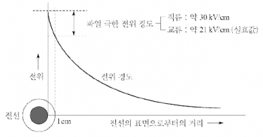
코로나 임계전압(\(E_0\))과 구성인자
\[ E*0 = 24.3 m_0 m_1 \delta d \log*{10} \frac{D}{r} [kV] \]
\(m_0\): 표면계수, \(m_1\): 날씨계수, \(\delta\): 공기 상대밀도
d: 지름[cm], r: 반지름[cm], D: 전선간 이격거리[cm]
코로나 손실
\[ P_c = \frac{241}{\delta}(f+25)\sqrt{\frac{d}{2D}}(E-E_0)^2 \times 10^{-5} [kW/km/선] \]
E 와 \(E_0는\) 상전압(대지전압)임에 주의해야 한다.
[배점: 5점]
[조건]
[계산과정]
1. 어레이의 개방전압 (\(V_{oc,array}\)) 계산:
직렬 연결이므로, $V{oc,array} = 5 V{oc} = 5 = 110[V] $
2. 어레이의 단락전류 (\(I_{sc,array}\)) 계산:
병렬 연결이므로, $I{sc,array} = 2 I{sc} = 2 = 10[A] $
3. 어레이의 최대 출력 전력 (\(P_{MPP}\)) 계산:
모듈의 효율을 이용하여 최대 출력 전력을 계산합니다. 정확한 공식은 문제의 맥락에 따라 다를 수 있습니다. 가장 일반적인 공식은 다음과 같습니다.
\[ P*{MPP} = V*{oc,array} \times I\_{sc,array} \times \eta \]
\[ P\_{MPP} = 110 \text{ V} \times 10 \text{ A} \times 0.15 = 165[W] \]
정답
해설) 단순 계산형 / 난이도 下
정답 [계산과정] \[ P\_{MPP} = \text{효율} \times \text{어레이면적} \times \text{일사강도} \] \[ = 0.15 \times ((1.06 \times 0.54) \times (5 \times 2)) \times 1000 = 858.6 [W] \] 정답 858.6 [W]
부분점수
| 점수 | 세부기준 |
|---|---|
| 5점 | 계산과정과 정답이 모두 맞은 경우 5점 획득 |
| 0점 | 계산과정이나 정답에 오류가 있는 경우 0점 |
해설
태양전지 모듈의 변환효율 구하기
\[ \eta = \frac{P*{MPP}}{A \times S} \times 100 = \frac{V*{MPP} \times I\_{MPP}}{A \times S} \times 100 \]
\[ P*{MPP}: 최대출력 [W], V*{MPP}: 최대출력 동작전압 [V] \] \[ I\_{MPP}: 최대출력 동작전류 [A], A: 설치면적 [m²], S: 일사강도 [W/m²] \]